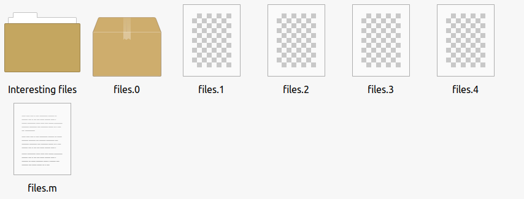

Welcome to arcK
Warning
This is an old obsolete version of arcK. These pages and manual have been kept for reference and legacy support. If you are looking for the latest version, click here.

arcK is a command-line, cross-platform archival tool to preserve data.
Thank you for stopping by and taking an interest in this project. This is an exciting project to archive important data to ensure successful recovery. To achieve this, the directory is encoded into 5 parts with 2 extra parts for redundancy, which means you only need 3 parts to restore.
This may take longer to do, but file integrity is of the utmost importance and this project ensures that even with 2 missing parts, data can be restored; an excellent use case is to store across multiple cloud storage providers or regional buckets with the same cloud provider. I have stored my personal photos across two S3 regions. Each bucket does not need to have all files, therefore I have stored 3 in one and 3 in another; with one part stored in both (bucket_US: 0,1,2; bucket_EU: 2,3,4).
Before:

After:

Original data remains intact. A new archive is created. You can specify a different output directory - the above is example only.
This is not a backup tool and cannot update the archive with incremental changes.
Let's get started: visit the download page.